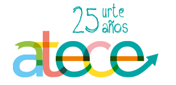
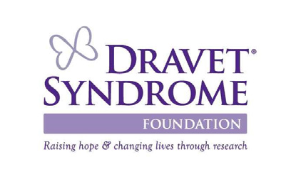

| FECHA |
8 de noviembre 2020 |
| DISTANCIA |
20 Km (no homologada) |
| RECORRIDO |
192 metros de desnivel positivo. Salida 5 m, llegada 5m, altura max. 80 metros en el Km 7,2 |
| CUPO MÁXIMO |
35.000 |
| HORA DE SALIDA |
Desde las 10,15 h. atletas a pie por grupos, 09,45 h. en silla de ruedas, 09,50 rollers |
| LUGAR DE SALIDA |
Behobia (Irún) |
| RECINTOS DE SALIDA |
Seis (3 vallados). Por tiempos y colores de dorsal |
| LUGAR DE LLEGADA |
San Sebastián, Alameda del Boulevard (Centro) |
| CRONOMETRAJE |
Mylaps |
| FIANZA DE CHIP |
No |
| PRECIO INSCRIPCIÓN |
48 € |
| TIEMPO MÁXIMO |
2 horas y 45 minutos (desde la salida) |
| LLEGADOS EN 2019 |
27.183 |
| CATEGORÍAS |
Júnior, Promesas, Senior, Veteranos/as, Discapacitados |
| TRASLADO A LA SALIDA |
En trenes desde San Sebastián y otras localidades |
| AVITUALLAMIENTOS |
8 en el recorrido y en la llegada |
| ASISTENCIA MÉDICA |
Puestos fijos en Km. 0, 7, 13, 15, 18, 19'5 y llegada |
| PREMIOS EN METALICO |
No |
| TROFEOS |
Tres primeros/as en cada categoría |
| REGALOS |
Medalla. Camiseta Adidas. |
| GUARDARROPA |
Sí |
| WC |
En salida, avituallamientos 1, 3, 4, 5, 6 y llegada |
| DUCHAS |
Polideportivos Zuhaizti, Manteo, Velódromo Anoeta y Cabinas Playa de la Concha |
| MASAJES |
En la plaza Oquendo |
| MÚSICA/ANIMACIÓN |
Sí |
| CONSIGNA DEPORTIVA |
Sí |
| PATROCINADOR PRINCIPAL |
Adidas |
| ORGANIZADOR |
Club Deportivo Fortuna |
ATECE - Asociación de daño cerebral adquirido
Asociación sin ánimo de lucro, que trabaja con el objetivo de mejorar la calidad de vida de las personas afectadas por un Daño Cerebral como consecuencia de un traumatismo craneoencefálico, accidente cerebro vascular, tumor cerebral
o cualquier enfermedad que origine una falta de oxigeno en el cerebro y la de sus familias.

FUNDACIÓN DRAVET
Epilepsia que se inicia durante el primer año de vida y conlleva a un deterioro neurológico del paciente. Es una enfermedad que no tiene cura y que, además, no responde a ningún tratamiento
